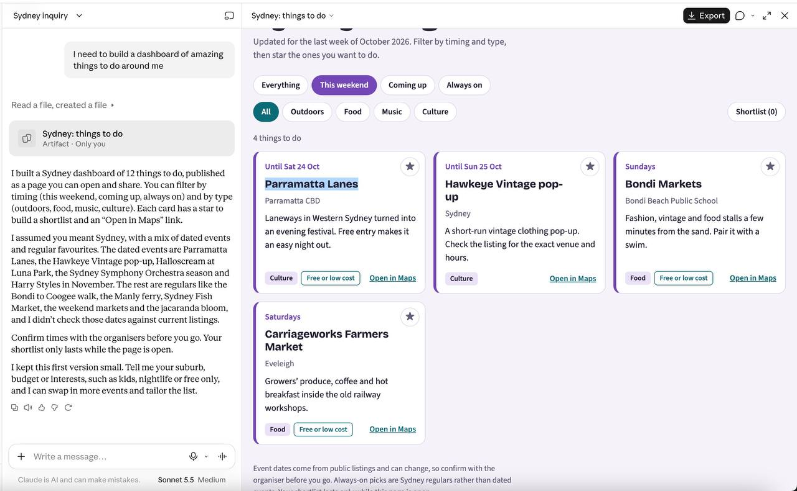

October 23, 2026 — a Sydney dashboard and the pitch behind it

The Sydney: things-to-do dashboard — this weekend filter, culture/food tags, stars and map links.
Blog post written: finding-the-good-stuff.md. "Nobody tells you when the cool stuff is on" — the angle:
Framing: the problem isn't a lack of events, it's that discovery is scattered, timing is fuzzy, and knowing ≠ going
The Facebook bit: calls out that FB Events is still the biggest event database but the venue is cringe — so the cool move is quietly scraping the events out and leaving the platform behind. I kept it honest: direct scraping is a ToS/technical nightmare, but the spirit of it (extract the signal, official APIs, aggregators, council feeds) is very doable
The fix: a boring single-page dashboard with filters, stars for shortlisting, and Maps links — basically the artifact in your screenshot, argued as a pattern
Practical bits: the "never drop an event without an end date + link" group-chat rule, star-voting to pick plans, and a field guide of sources that still work (council pages, venue mailing lists, regulars/fixtures, the friend who's a human RSS feed)
Happy to personalise it (your city, an actual list of go-to events), make it shorter/punchier, or convert it to HTML for the blog.